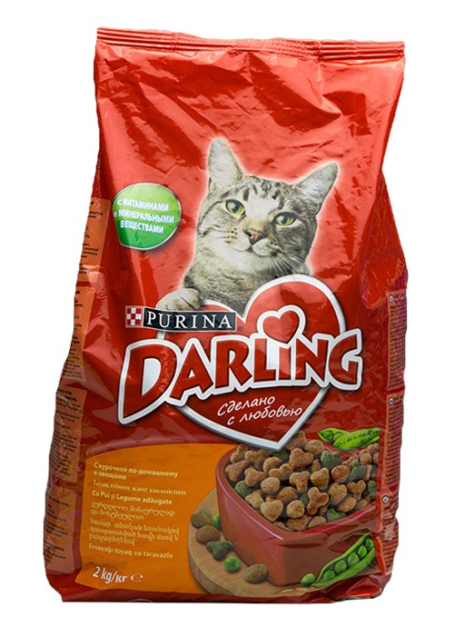

МЕНЮ
Purina - сухой корм для кошек

Домашние кошки проводят много времени, ухаживая за своей шерстью, что часто приводит к образованию волосяных
комков в желудке, которые могут доставить дискомфорт. Также они ведут менее активный образ жизни. В результате
их потребность в энергии снижается, и они становятся склонными к набору лишнего веса. Корм Purina
разработан специально для кошек, живущих в домашних условиях, и способствует уменьшению образования комочков
шерсти в желудке.
Способствует выведению комочков шерсти из желудка благодаря наличию клетчатки. Формула с содержанием
цикория, высококачественного натурального ингредиента, помогает уменьшить неприятный запах от туалетного лотка,
способствует балансу микрофлоры кишечника и поддерживает здоровую пищеварительную систему. Благодаря
оптимальному соотношению белков и жиров корм помогает поддерживать здоровье кошки
Ингредиенты:
- индейка (18%),
- рис (15%),
- кукуруза,
- кукурузный глютен,
- концентрат белка гороха,
- животный жир,
- витамины,
- овощи и продукты их переработки,
- травы.
Гарантированный анализ:
- белок 36%
- жир 16%
- клетчатка 2%
- Омега-6 жирные кислоты 2%
- зола 7,5%
- таурин: 0,13%
© "Все права защищены"